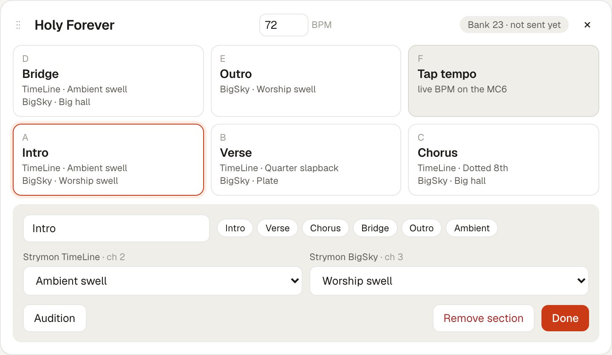
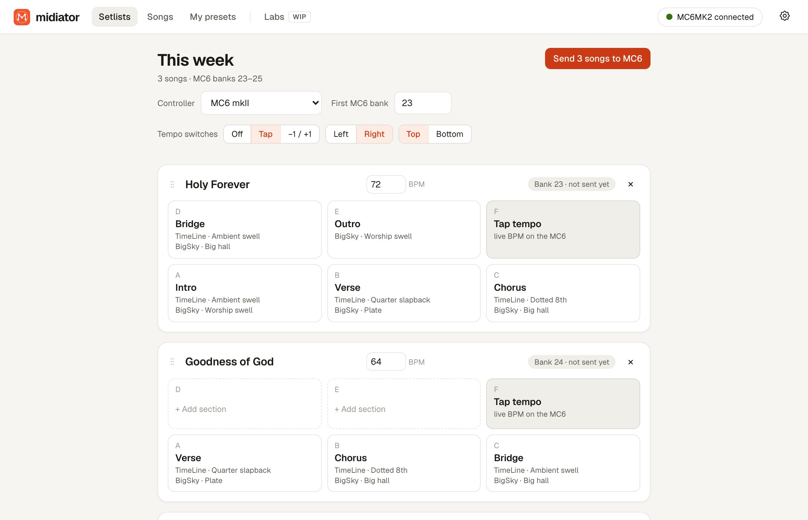
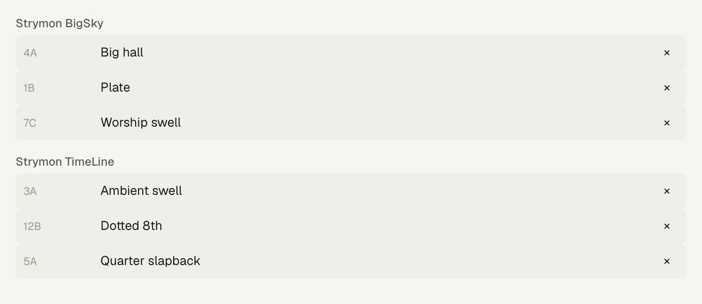
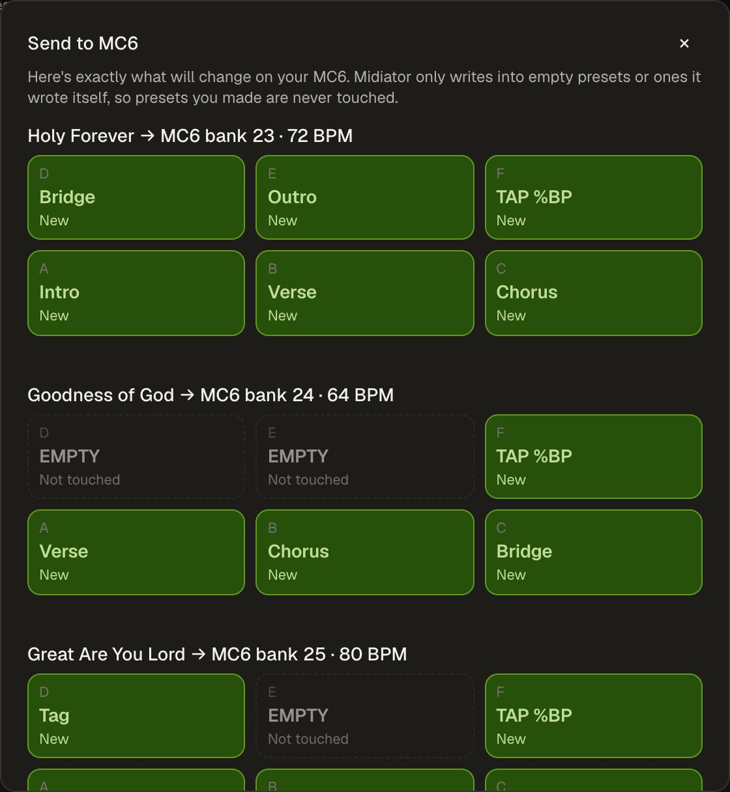

One song, one bank.
Lay out each song on your footswitches, part by part, exactly like the hardware.

For guitarists with a MIDI pedalboard
Pick a sound for every part of every song. Midiator programs your MIDI controller for you, in minutes.
Free · Apple chip and Intel

10 min
to set up a whole week's setlist.
Every part
gets its own sound. No more small, medium, large.
Zero code
Know your presets. Midiator does the MIDI.
Try it
Name it, give each part a sound, send it to the board.
Features
Lay out each song on your footswitches, part by part, exactly like the hardware.

Add the presets already saved on your pedals. Every song picks from them.

Every change, switch by switch. Presets you made yourself are never touched.

A BPM per song, plus a Tap or −1 / +1 switch.
Midiator reads your Morningstar, or listens to any controller, and finds your presets.
Works with
Every device's real MIDI map, taken from its manual.
Full support tested on real hardware Beta built from the maker's manual
FAQ
No. Midiator only calls presets up. It never saves anything to a pedal. On your controller it only writes to empty presets or ones it made itself.
A Mac, a MIDI controller and MIDI pedals. Midiator programs Morningstar and Pirate MIDI controllers over USB. For Quad Cortex, HX Stomp, Boss, RJM and others it gives you a setup sheet to copy in.
Yes. Midiator remembers what it wrote, updates only what changed and leaves your own presets alone.
Not in the main app: it's exact MIDI maths. An optional AI helper lives in Labs and is still a work in progress.
Midiator isn't registered with Apple yet. The first time, right-click it in Applications and choose Open (or System Settings → Privacy & Security → Open Anyway). After that it opens normally and updates itself.
Mac first. Windows is on the list.
Free for Mac.